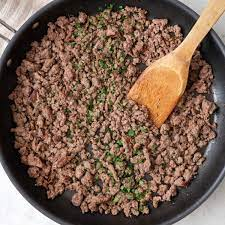

Return to index
Best Morning Pancakes
Who is responsible for the pancake?
The Ancient Greeks made pancakes called τηγανίτης (tēganitēs), ταγηνίτης (tagēnitēs) or ταγηνίας (tagēnias), all words deriving from τάγηνον (tagēnon), "frying pan". The earliest attested references to tagenias are in the works of the 5th-century BC poets Cratinus and Magnes.
How long does pancake batter last for?
pancake batter (made from flour, milk and eggs) should last for between two to four days when stored in the refrigerator, depending on the expiry date listed on your milk and eggs.
Ingredients
- 1 lb ground beef 70-80% lean*
- 1 tbsp chili Powder
- ½ tsp salt
- ¾ tsp cumin
- ½ tsp dried Mexican oregano
- ¼ tsp granulated garlic
- ¼ tsp granulated onion
- ½ cup tomato sauce
Instructions
Step 1 - Cook & Drain Ground Beef:
Heat a large skillet over medium heat. Add the ground beef. Break the beef up with a wooden spoon while cooking. Cook the ground beef fully, until browned and no longer pink.
Drain any excess grease from the skillet. Then return to the stove and reduce the heat to low.

Step 2 - Season Beef:
Add the 1/2 cup tomato sauce and taco seasoning. Stir together until the meat is coated in the sauce.
 Step 3 - Simmer Beef:
Allow to simmer for 5 minutes.
Step 3 - Simmer Beef:
Allow to simmer for 5 minutes.
 Step 4 - Fry Tortillas:
our 1/2 cup oil in a medium size skillet, heat over medium high heat. Carefully dip a tortilla, if the oil sizzles and bubbles then it's hot enough. Gently lay the tortilla in the oil and fry each side for about 30 seconds, just enough to give some color and add some crispness.
Step 4 - Fry Tortillas:
our 1/2 cup oil in a medium size skillet, heat over medium high heat. Carefully dip a tortilla, if the oil sizzles and bubbles then it's hot enough. Gently lay the tortilla in the oil and fry each side for about 30 seconds, just enough to give some color and add some crispness.
 Step 5 - Serve:
Fill the tortillas with the ground beef taco meat and add desired toppings
Step 5 - Serve:
Fill the tortillas with the ground beef taco meat and add desired toppings
 Return to top
Return to index
Return to top
Return to index